虎尾小劇場｜三年級資源班
1
每個人都有不會的事。
2
試一試、舉起手、說清楚、說謝謝。
虎尾小劇場｜需要幫忙，我會說出來
想一想
什麼事不會？
你有問別人嗎？
為什麼不敢問？
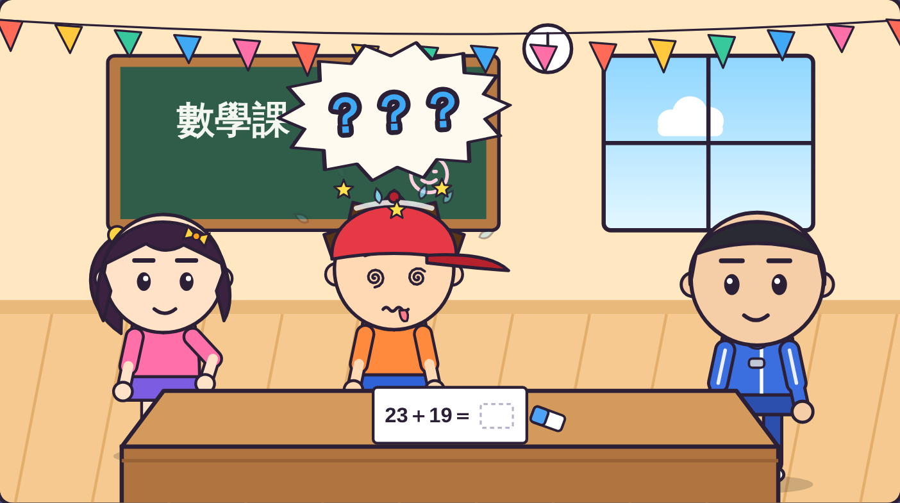
虎尾小劇場｜需要幫忙，我會說出來
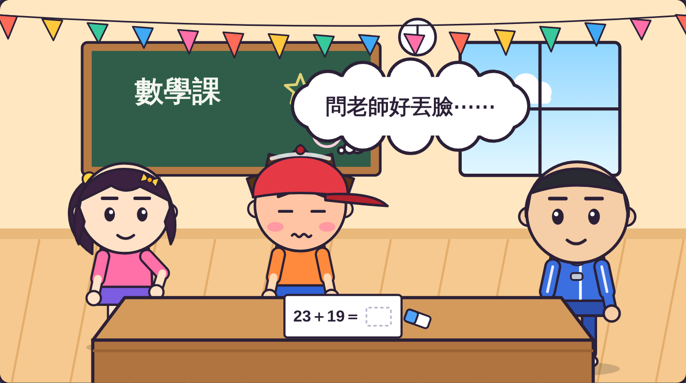
阿樂心想：
「問老師好丟臉⋯⋯」
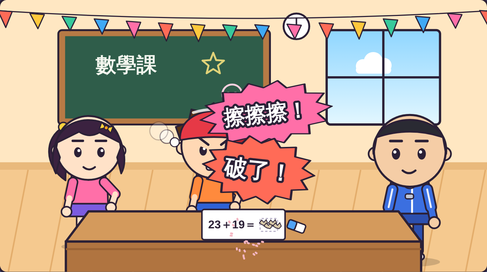
一直擦、一直擦，
紙都擦破了。
虎尾小劇場｜需要幫忙，我會說出來
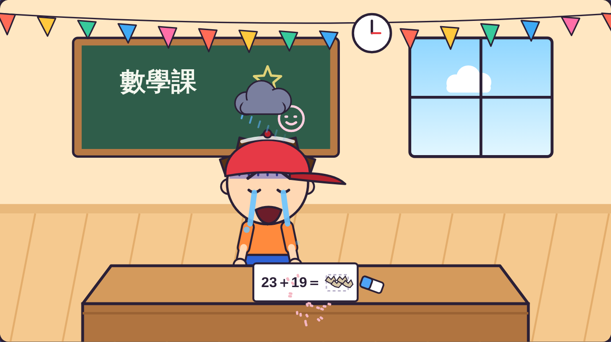
下課鐘響了，
題目還是沒寫。
越來越不會，
也越來越難過。
需要幫忙說出來，
一點都不丟臉！
虎尾小劇場｜需要幫忙，我會說出來
1
自己先試
2
舉手或走過去
3
說出哪裡不會
4
「謝謝你！」
第 1 步
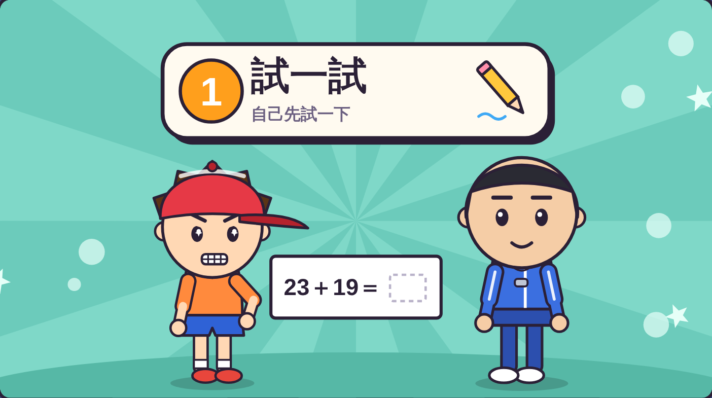
自己先試一下，
想一想、做一做。
試過了還是不會
→ 下一步
先試試看！
虎尾小劇場｜需要幫忙，我會說出來
第 2 步
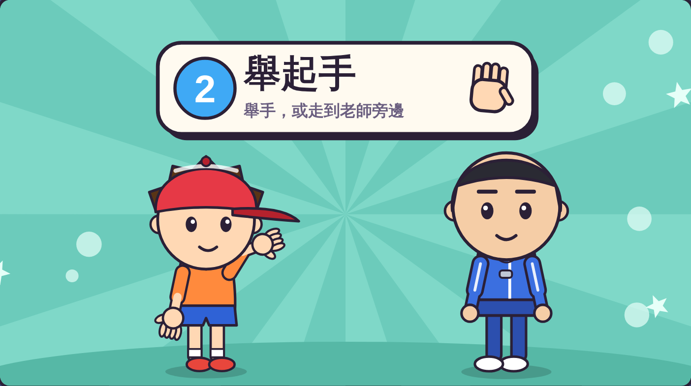
舉起手，
等老師看到你。
也可以走到老師旁邊。
一起舉手！
虎尾小劇場｜需要幫忙，我會說出來
第 3 步
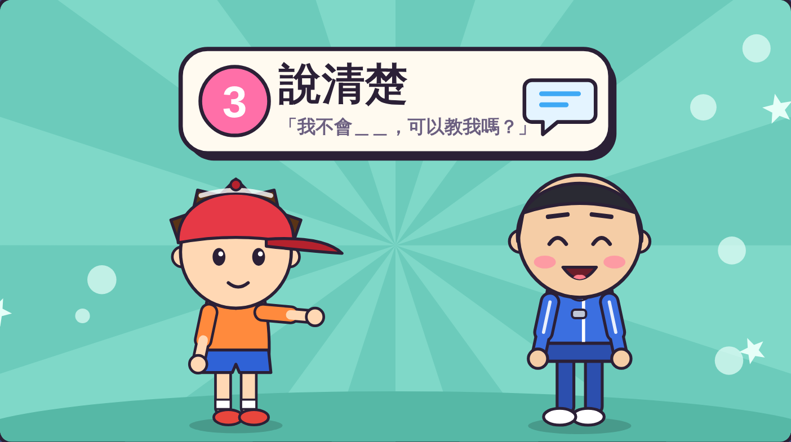
「老師，這一題的進位
我不會，可以教我嗎？」
說出「哪裡」不會。
換你說說看！
虎尾小劇場｜需要幫忙，我會說出來
第 4 步
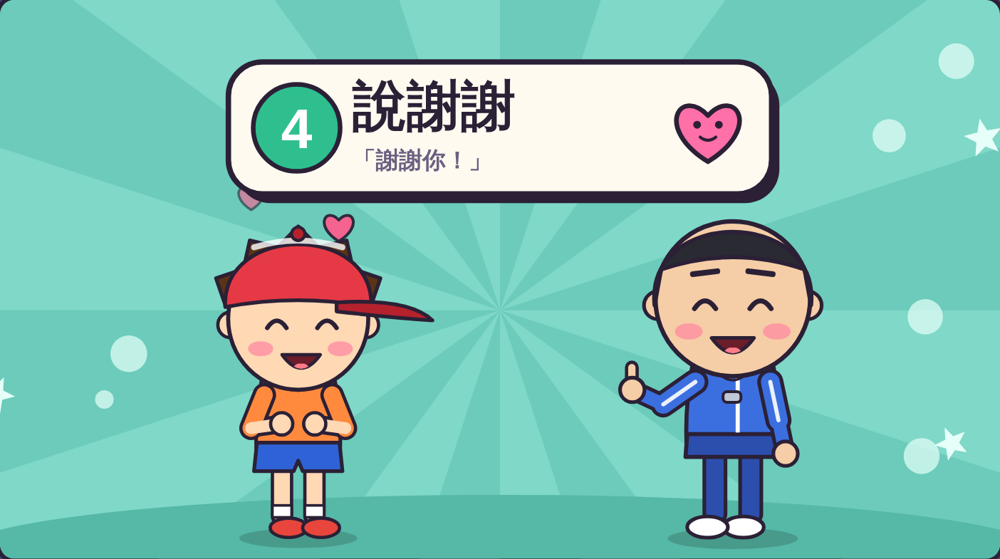
「謝謝老師！」
別人幫你之後，
記得說謝謝。
說謝謝！
虎尾小劇場｜需要幫忙，我會說出來
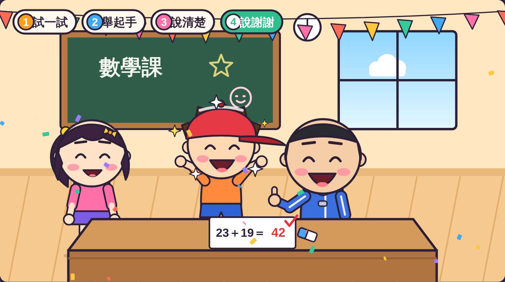
阿樂學會了，
題目寫對了！
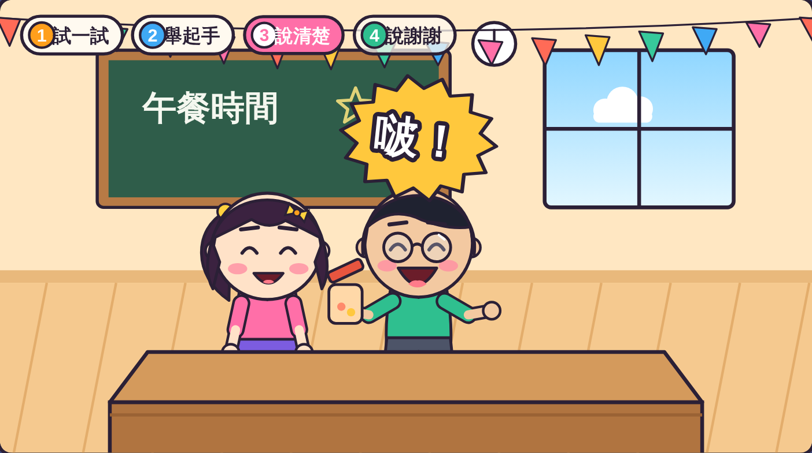
小安的罐子打不開，
請阿凱幫忙。
虎尾小劇場｜需要幫忙，我會說出來
老師抽一張情境卡，用求助四步驟演出來。
情境 1
情境 2
情境 3
虎尾小劇場｜需要幫忙，我會說出來
一起念口訣
試一試，舉起手，
說清楚，說謝謝，
需要幫忙說出來，
一點都不丟臉！
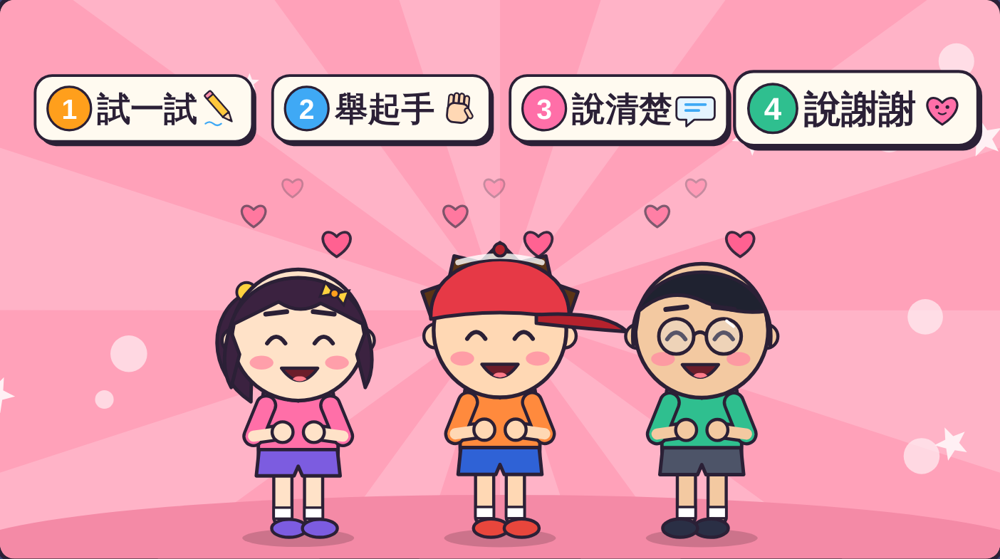
打開「求助挑戰題」，
回答 8 個問題。
8 題
虎尾小劇場｜需要幫忙，我會說出來